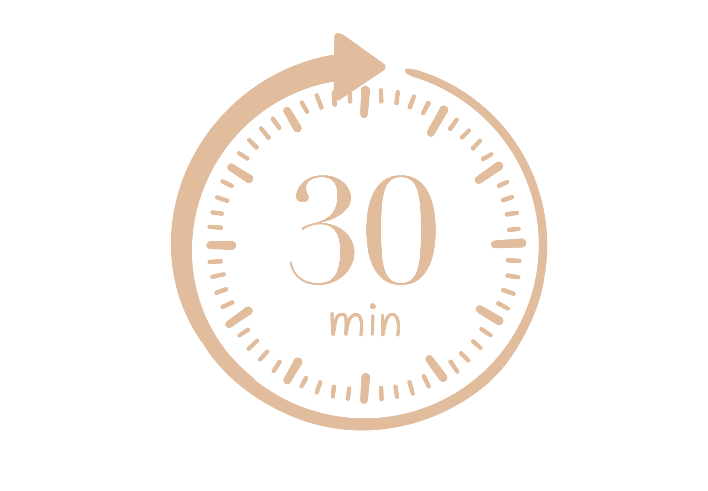
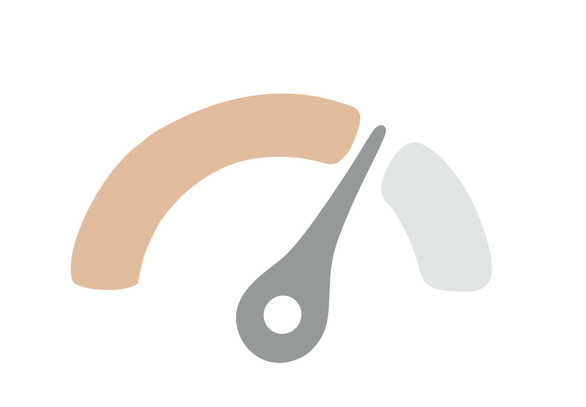
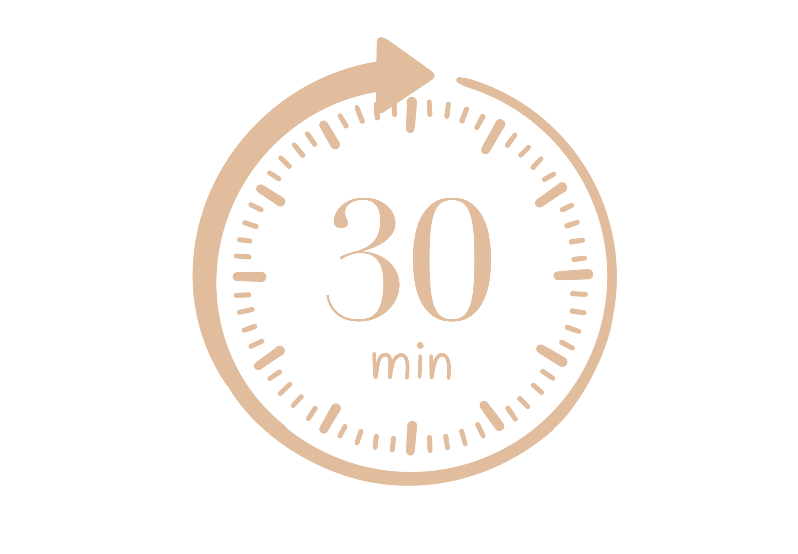
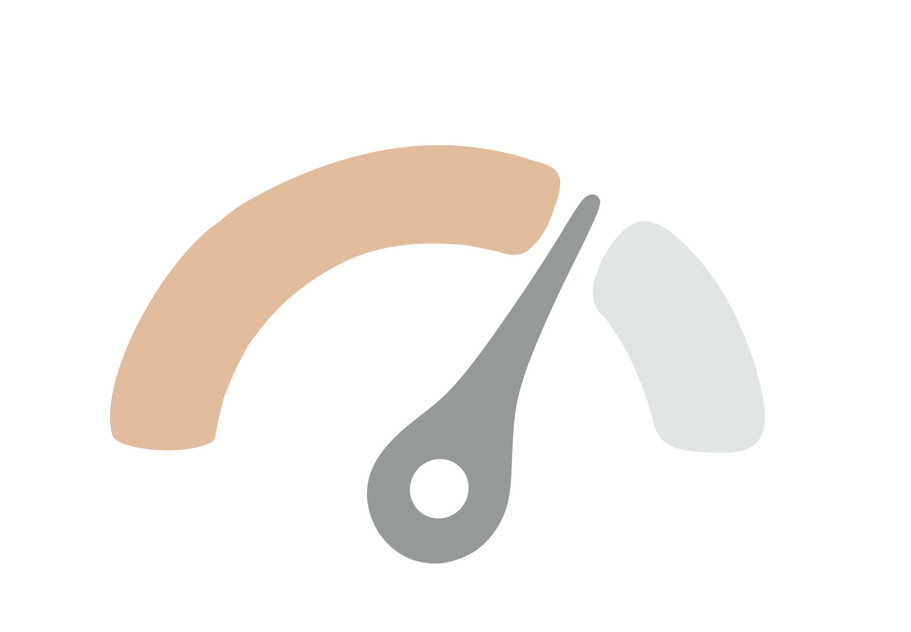
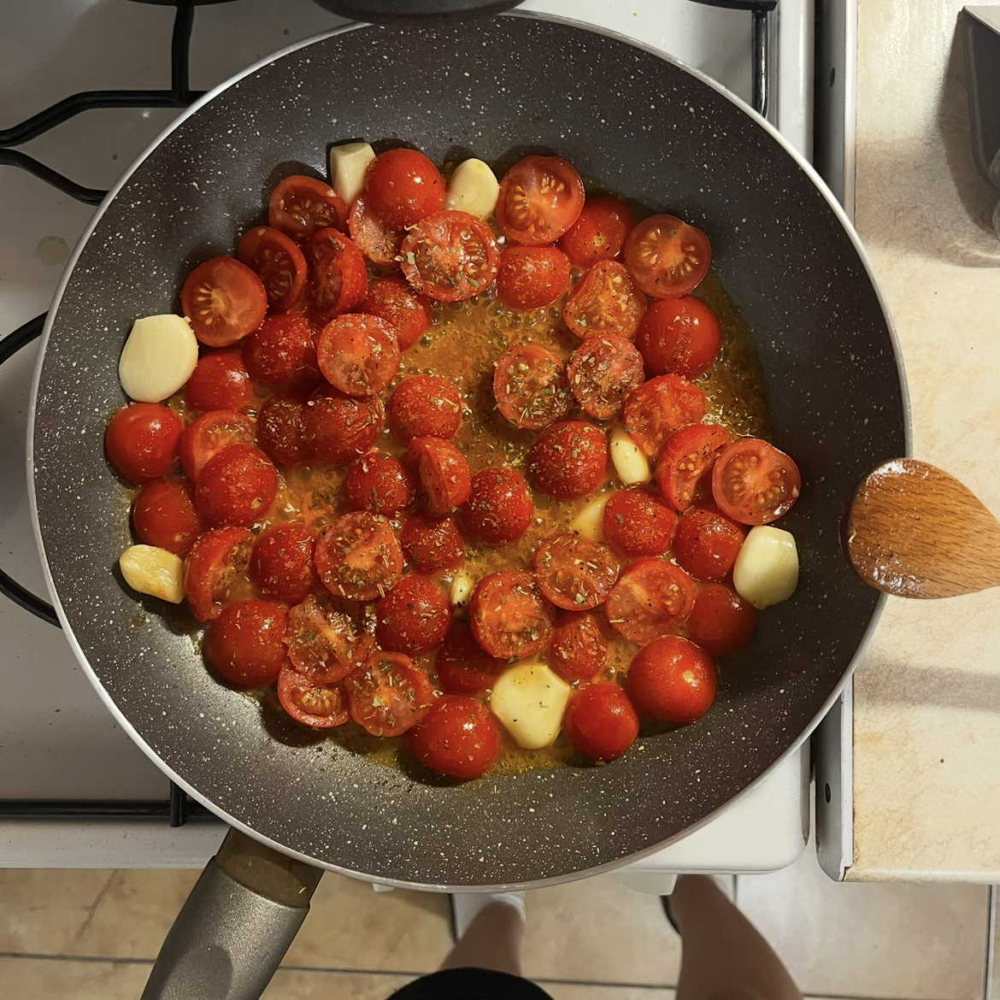
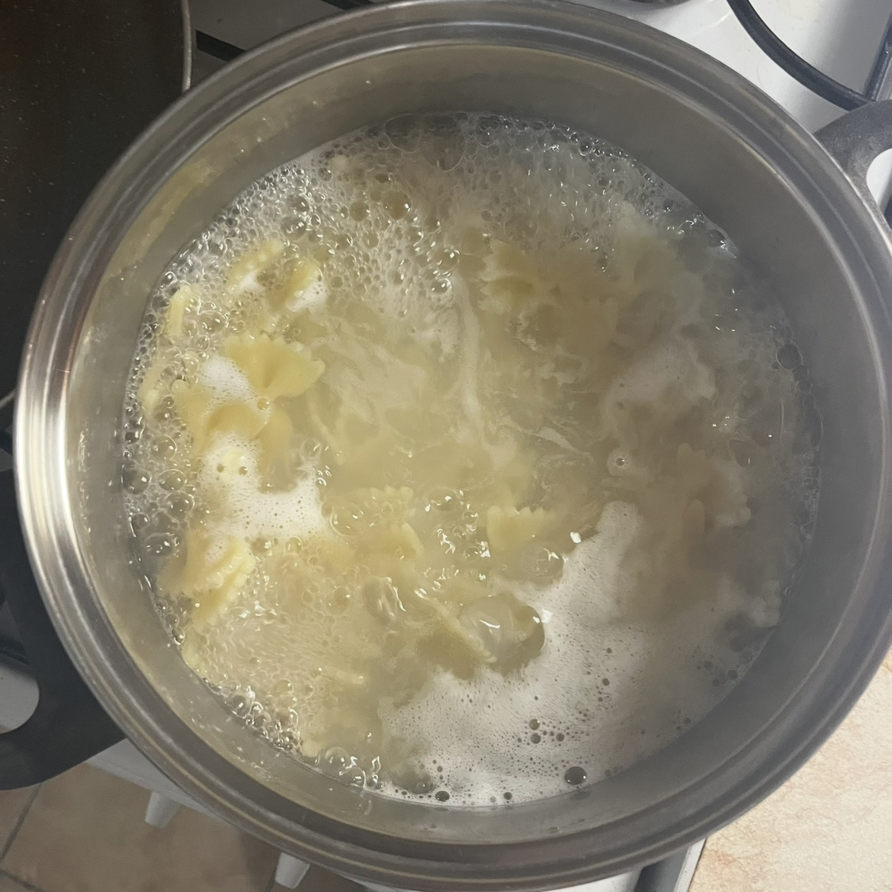
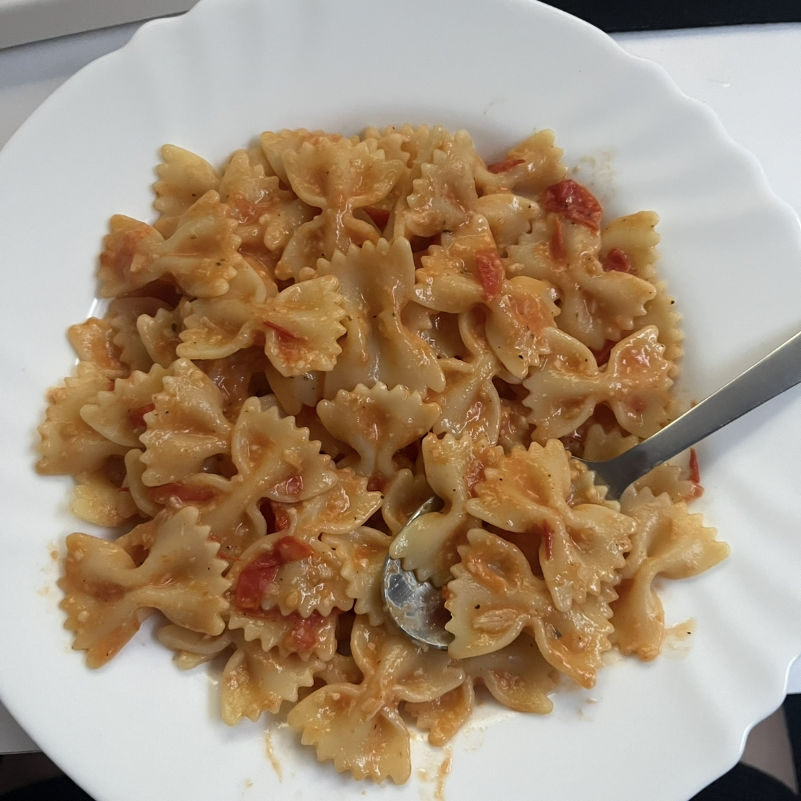

Paradajkové cestoviny s mozzarellou
 



Postup:
-

Strúčiky cesnaku a cherry paradajky uvarte dokým nezmäknú a pridajte korenie podľa uváženia.
-
Akonáhle všetko zmäkne, dáme to po častiach do mixéru spolu s nakrájanými plátkami mozzarelly a mixujeme až do kým nebudé z toho omáčka.
-

Medzi tým uvaríme cestoviny podľa návodu.
-

Omáčku dáme na vytvorené cestoviny a pochutíme si.
Tipy a triky:
-
Cherry paradajky môžete zameniť aj za normálne ale budú sa dlhšie variť.
-
Ak nemáte cesnak, použite cesnkový prášok.
-
Omáčku robte jedine po častiach inak sa to bude ťažko mixovať.
-
Omáčka vám výjde aaj na viac ako 2 porcie.